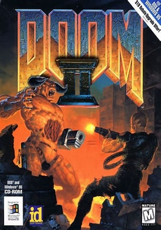
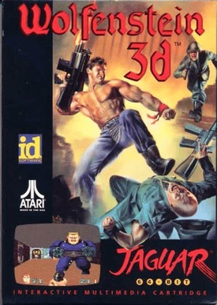
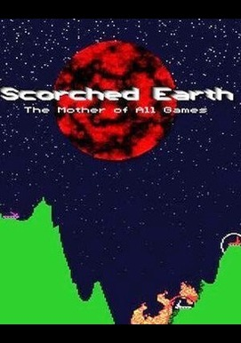
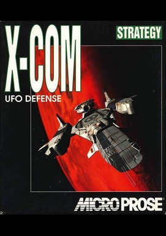
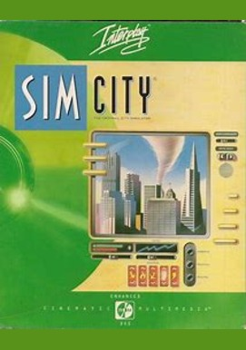
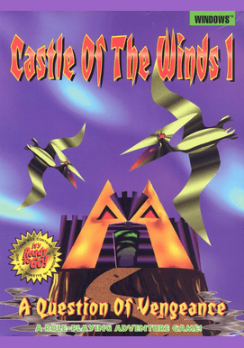
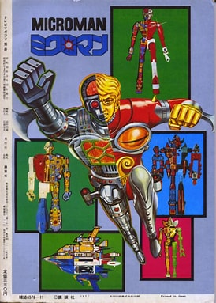
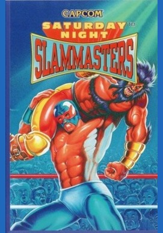
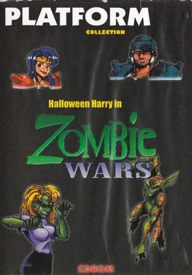
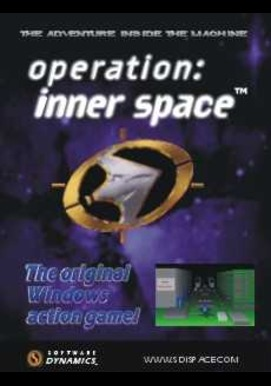

Home
PC Games
Welcome To Retro Game Free Downloads
This Website Provides Direct Downloads To Old Games From The 90's.
Just Click On The Game Image To Download!
MS-DOS Games
Download DosBox To Play These Games
How To Use DosBox To Play These Games





Windows 3.11 Games
Includes Windows 1.0, 2.0, 3.0, 3.1, And 3.11 Games
How To Run Windows 3.11 Games




